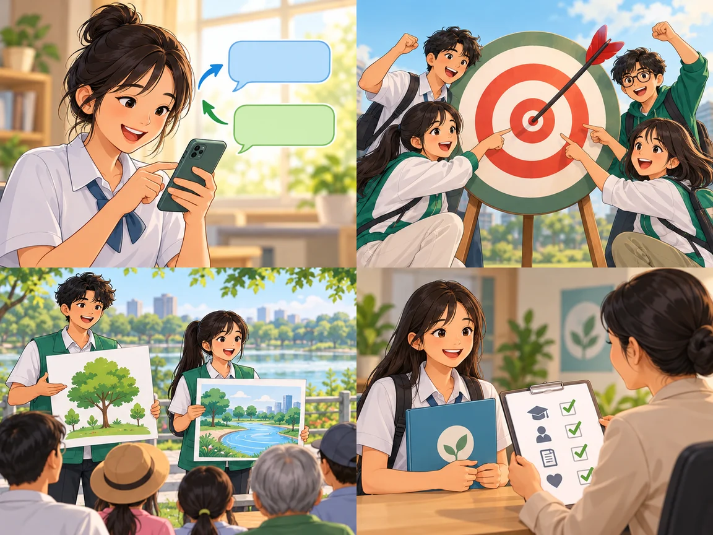
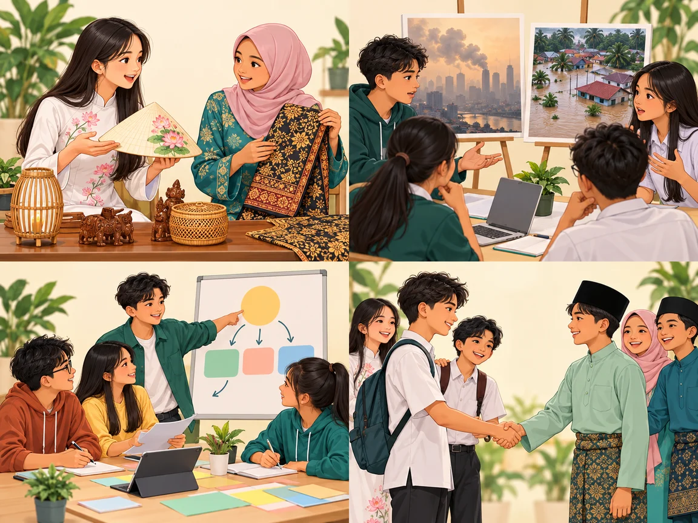
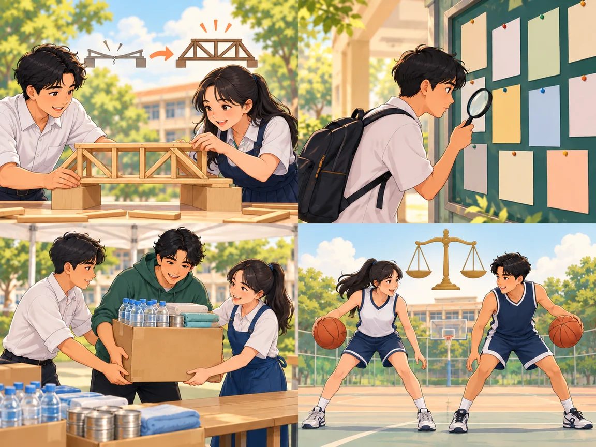
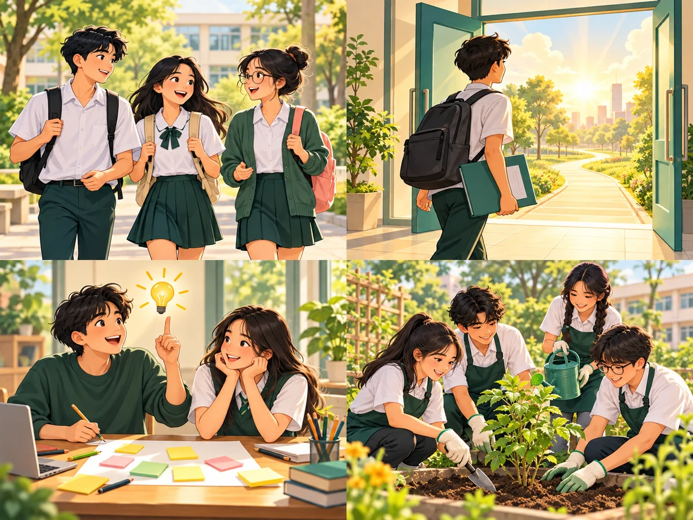
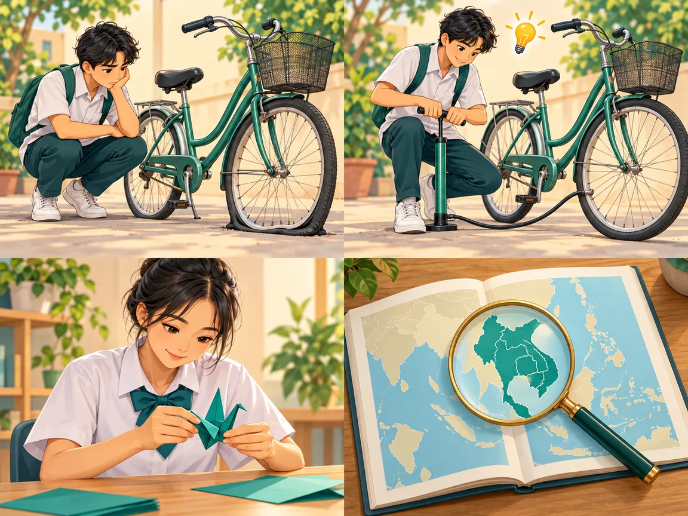
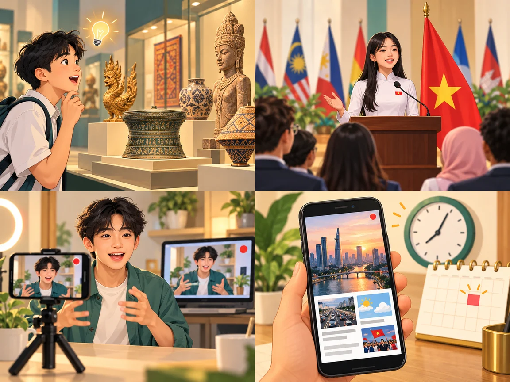
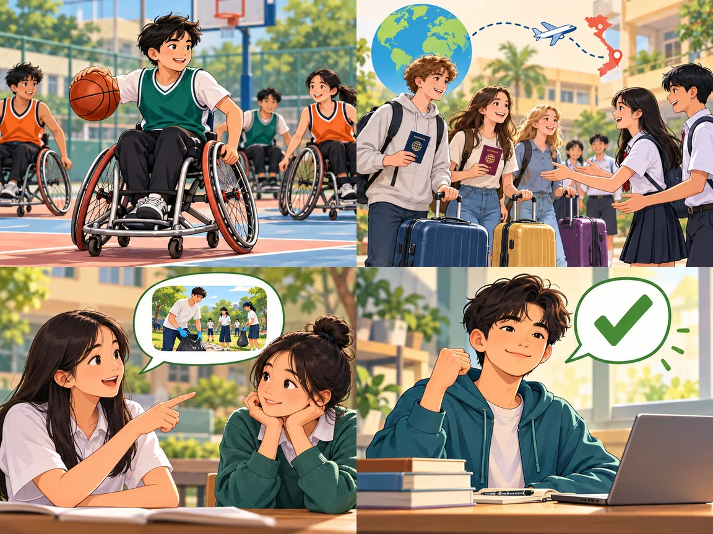
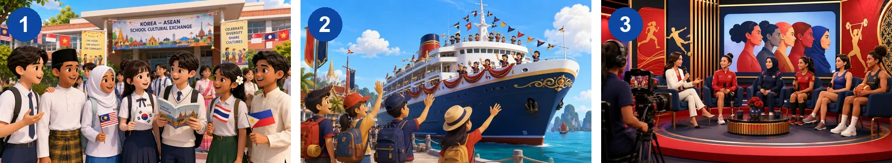

ASEAN news
Lesson 3 — Reading
4Five stops in 45 minutes
- 📰
News topics
Warm-up
5 min - 📚
Before reading
Discuss + new words
10 min - 📖
Three news items
Tasks 2–4
20 min - 💬
Discuss
Which news interests you?
7 min - ✅
Wrap-up
Skim · scan
3 min
Warm-up
Guess the news topic
5 minutesWhich section is it in?
Students Join an ASEAN School Exchange Programme Education
Vietnamese Athletes Win Medals at Regional Games Sports
Traditional Dance Festival Brings ASEAN Cultures Together Culture
ASEAN Leaders Meet to Discuss Regional Cooperation Politics
Before reading
Discuss + new words
10 minutesYour news habits
1. Where do you most often read the news?
2. What is your favourite news section: Politics, Education, Sports or Culture?
I usually read the news on … · My favourite section is … because …

raise awareness
(v phr) /reɪz əˈweənəs/ nâng cao nhận thức
discuss
(v) /dɪˈskʌs/ thảo luận We discuss current issues.discussion
(n) /dɪˈskʌʃn/ sự/cuộc thảo luận We had a useful discussion.
strengthen
(v) /ˈstreŋθən/ củng cố, tăng cườngrelation
(n) /rɪˈleɪʃn/ mối quan hệlook for
(phr v) /lʊk fɔː(r)/ tìm kiếm
participant
(n) /pɑːˈtɪsɪpənt/ người tham gia Each participant represents a country.support
(v, n) /səˈpɔːt/ hỗ trợ, ủng hộ; sự hỗ trợopportunity
(n) /ˌɒpəˈtjuːnəti/ cơ hội
issue
(n) /ˈɪʃuː/ vấn đề
eye-opening
(adj) /ˈaɪ ˌəʊpənɪŋ/ mở mang tầm mắtparticipate
(v) /pɑːˈtɪsɪpeɪt/ tham gia; thường đi với in Students participate in the programme.participation
(n) /pɑːˌtɪsɪˈpeɪʃn/ sự tham gia Participation in the programme is voluntary.gender equality
(n phr) /ˌdʒendər iˈkwɒləti/ bình đẳng giới
disability
(n) /ˌdɪsəˈbɪləti/ khuyết tậtlive-streamed
(v-ed) /ˈlaɪv striːmd/ được phát trực tiếp The talk show was live-streamed.represent
(v) /ˌreprɪˈzent/ đại diệnWhile reading
Three news items · Tasks 2–4
20 minutesHeadlines A–E

A. Don’t miss this opportunity to represent your country!
B. Travelling to ASEAN countries
C. Equality in sport for ASEAN women
D. Korean and ASEAN students
E. Volunteers needed to take part in cultural exchanges
Headline: D · Korean and ASEAN students
To raise awareness of ASEAN and promote cultural exchanges between the youths of Korea and ASEAN, the ASEAN-Korea Centre (AKC) regularly organises an ASEAN School Tour Programme. Last week, the AKC welcomed 121 Korean and Asian students from six schools. They learnt about ASEAN members, and discussed why ASEAN was important to Korea, and how to strengthen ASEAN-Korea relations. The students also took part in a variety of cultural activities such as singing traditional songs and making ASEAN posters.
Headline: A · Don’t miss this opportunity to represent your country!
The Ship for Southeast Asian and Japanese Youth Programme (SSEAYP) is looking for participants. Organised by the government of Japan and supported by the governments of Southeast Asia, this journey will last for 50 days and will bring together over 300 youths from ASEAN countries and Japan.
The SSEAYP journey
Young people will have the opportunity to take part in exciting discussions on current social and youth issues, and eye-opening cultural exchanges. They will also receive training to help them develop problem-solving and leadership skills. The journey starts in Japan and participants travel to five ASEAN countries.
Headline: C · Equality in sport for ASEAN women
An ASEAN talk show on women in sport took place in December. Its goal was promoting gender equality in and through sport. It featured 10 female sports representatives from 10 ASEAN countries. The talk show also discussed the rights of sports people with disabilities. All participants agreed that women and girls should be given more opportunities to play sports and represent their countries at international events. The talk show was live-streamed on the ASEAN webpage.
Use the context
1. relations c
2. eye-opening d
3. represent b
4. live-streamed a
a. shown over the Internet
b. to act officially for another person or organisation
c. the way in which people or groups of people behave towards each other
d. surprising because you learn something new
Scan for details
Example: Who organises the ASEAN School Tour Programme? → The ASEAN-Korea Centre.
1. How many students visited the AKC last week? 121 (students)
2. How long will SSEAYP participants stay together on board the ship? 50 days
3. What will participants in SSEAYP discuss besides youth issues? current social issues
Scan for details
4. When did the ASEAN talk show on women in sport happen? (in) December
5. Where was the talk show shown live? (on) the ASEAN webpage
Tip
Underline the key words in the question, find them in the text, then read only that part carefully.
After reading
Which news interests you?
7 minutesDo you want to find more information about any of the news items? Which one? Why?
I’d like to know more about news item … because … · I’m interested in … · I want to find out …
Report one news item in 3–4 sentences
Good morning. Here is today’s ASEAN news.
This news is about … It happened in / on …
I think it is interesting because …
Skim · scan · guess · give opinions
- 👀
Skimming
choose suitable headlines
- 🔎
Scanning
find specific information
- 🧩
Context
guess the meaning of new words
Homework
1. Write 4–5 sentences about the news item you are most interested in.
2. Do the Reading exercises in the workbook.
3. Get ready for Lesson 4 — Speaking.